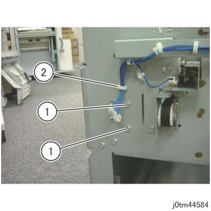
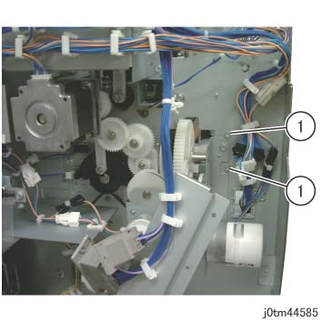
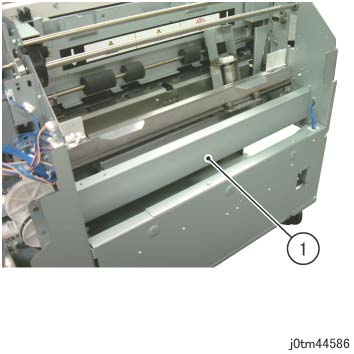
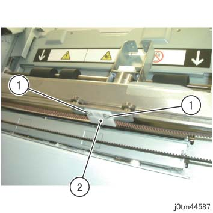
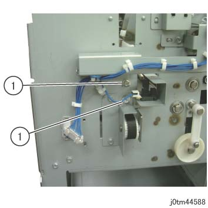
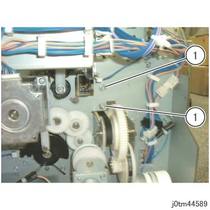
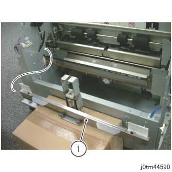
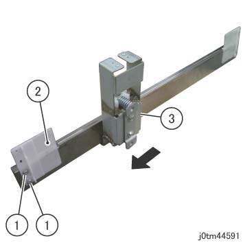

REP 45.20.1 按下 辊 
参考 PL:PL 45.20
Removal

执行IOT关机步骤. 确认电源已关闭并拔掉电源插头.
拆卸方背折叠裁切器的电源线支架.
拔出方背折叠裁切器的电源线.
分离方背折叠裁切器. (REP 45.1.1)
拆卸 前面 上方 盖板. (REP 45.2.1)
拆卸后盖板. (REP 45.4.1)
拆卸皮带 传输 组件. (REP 45.10.1)
拆卸 连接器 支架. (REP 45.19.3)
拆卸 Clamper 上方 板. (REP 45.19.2)
拆卸 Waste Container.
拆卸 螺钉 该 固定 the Tie 板 在前面. (图 1)
拆卸螺钉（x2）.
拆卸卡箍 从 框架.

(图 1) tm44584
拆卸 螺钉 该 固定 the Tie 板 在后面. (图 2)
拆卸螺钉（x2）.

(图 2) tm44585
拆卸 Tie 板. (图 3)
拆卸 Tie 板.

(图 3) tm44586
移动 the 按下 辊 到 中央.
拆卸皮带 支架. (图 4)
拆卸螺钉（x2）.
拆卸皮带 支架.

(图 4) tm44587
拆卸 螺钉 该 固定 the Clamper 下方 板 在前面. (图 5)
拆卸螺钉（x2）.

(图 5) tm44588
拆卸 螺钉 该 固定 the Clamper 下方 板 在后面. (图 6)
拆卸螺钉（x2）.

(图 6) tm44589
拆卸 Clamper 下方 板 和 the 按下 辊. (图 7)
拆卸 Clamper 下方 板 和 the 按下 辊.

(图 7) tm44590
拆卸 按下 辊. (图 8)
拆卸螺钉（x2）.
拆卸板.
拆卸 按下 辊 in the 方向 的 arrow.

(图 8) tm44591
安装
To 安装, carry 出 the removal steps 按相反顺序.